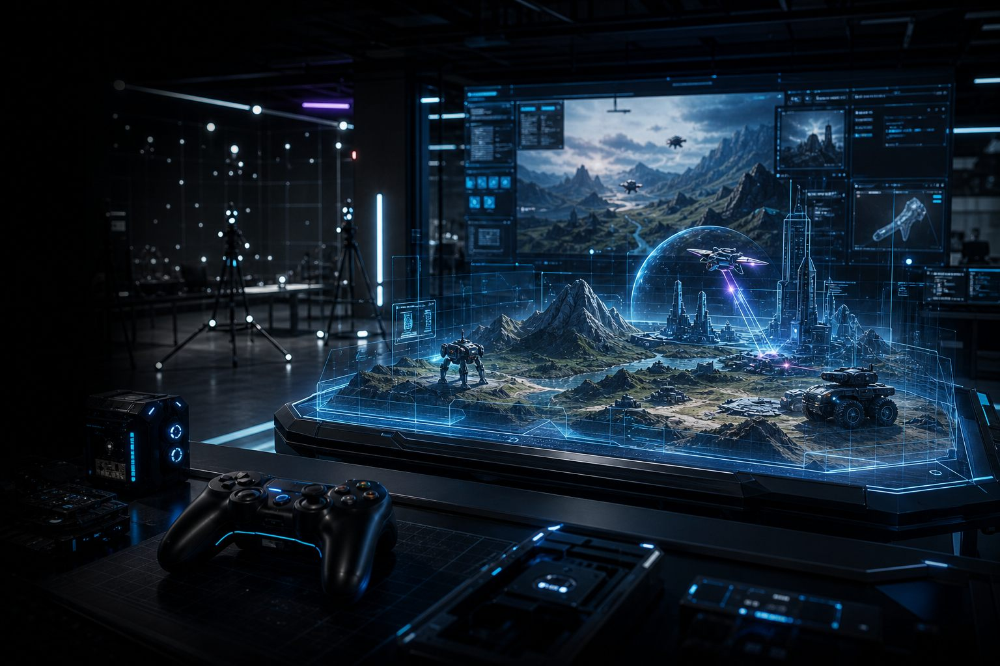

Servicio / Videojuegos
Experiencias interactivascon proposito empresarial
Construimos videojuegos, simuladores y experiencias gamificadas para entrenamiento, marca, educacion, comunidades y productos digitales.
La division interactiva de Tecnotitan combina narrativa, sistemas, UX y tecnologia web para transformar entrenamientos, lanzamientos o productos en experiencias memorables.
Puede aplicarse a capacitacion, marketing, educacion, onboarding, simuladores operativos o prototipos de entretenimiento.
Simuladores
Entrenamiento, evaluacion, escenarios de decision y aprendizaje interactivo.
Gamificacion
Sistemas de progreso, retos, recompensas, comunidades y experiencias de marca.
Videojuegos web
Prototipos, juegos promocionales, experiencias educativas y mundos interactivos.
Paquetes interactivos
Formatos para validar una experiencia, entrenar equipos o crear una activacion digital de alto impacto.
Prototipo interactivo
Mecanica central, flujo jugable, interfaz base y validacion de experiencia.
Simulador de entrenamiento
Escenarios, evaluacion, progreso, retroalimentacion y medicion de aprendizaje.
Experiencia de marca
Juego web, campana interactiva, comunidad, analitica y optimizacion.
Mayor participacion
Experiencias que aumentan atencion, recordacion y tiempo de interaccion.
Aprendizaje medible
Escenarios con progreso, errores, decisiones y resultados observables.
Activo reutilizable
Base interactiva que puede evolucionar hacia nuevos niveles, contenidos o productos.
SEO / Simuladores y videojuegos empresariales
Experiencias interactivas para capacitación, marca y educación.
Landing orientada a búsquedas sobre gamificación corporativa, simuladores empresariales, entrenamiento interactivo y videojuegos para marcas.
Simulador de capacitación
Entrenar decisiones, errores frecuentes, protocolos y escenarios complejos con medición de progreso.
Activación de marca
Crear experiencias web memorables para lanzamientos, campañas, comunidades o educación de producto.
¿Por qué usar gamificación?
Porque aumenta participación, retención, repetición y comprensión cuando el aprendizaje necesita práctica activa.